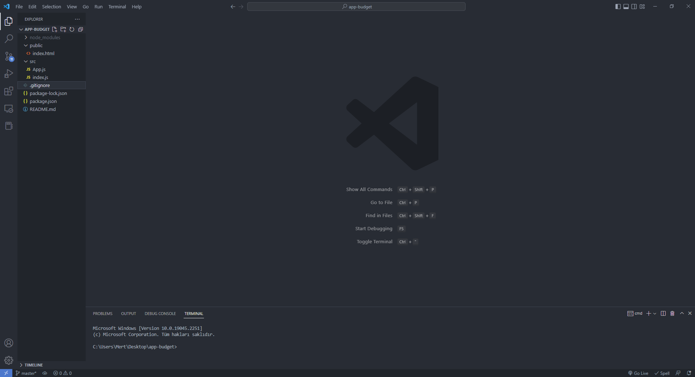
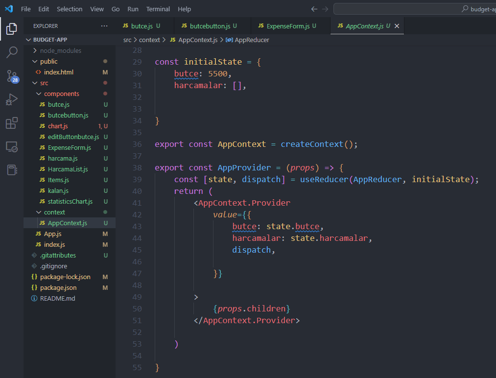
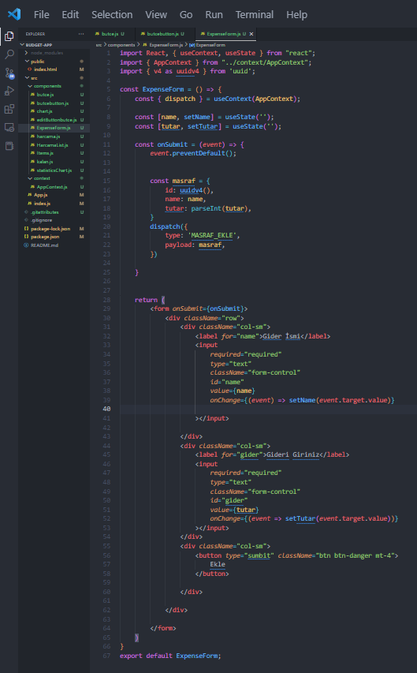
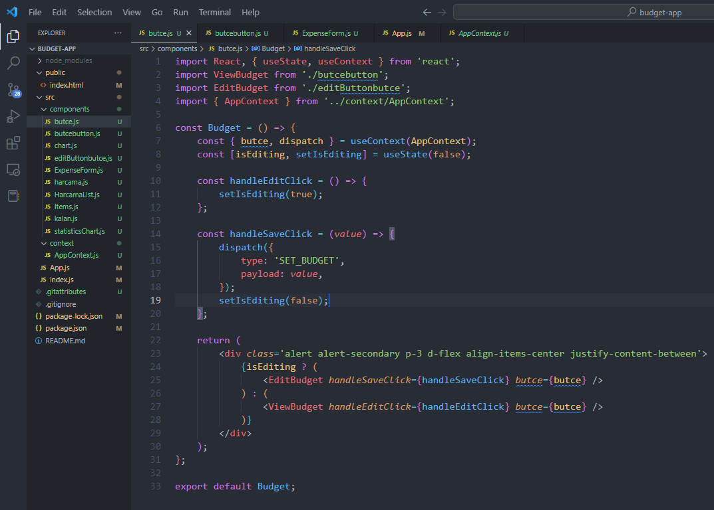
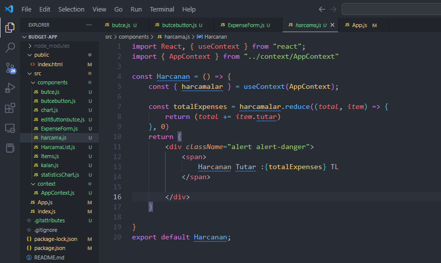
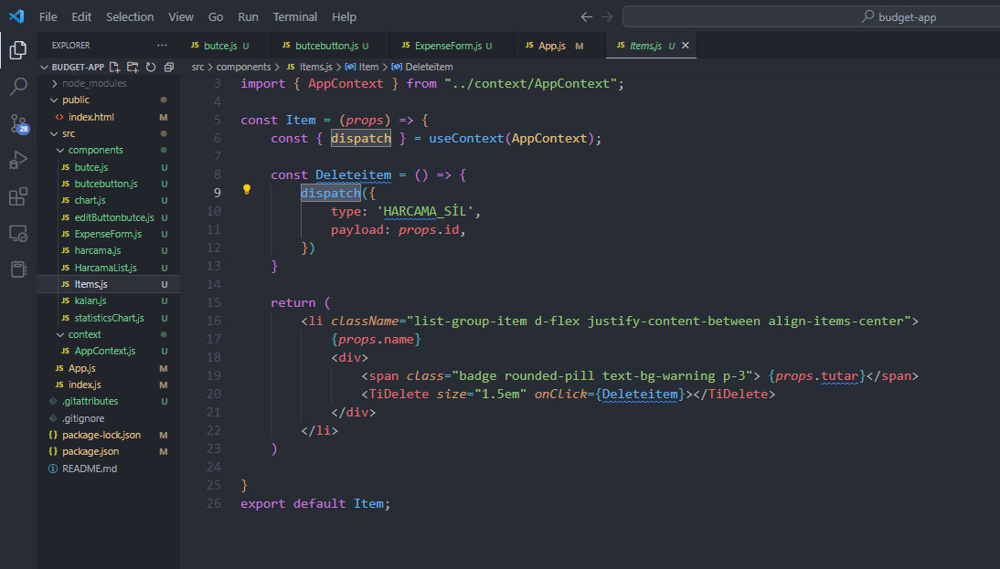

Bütçe Takip ve Planlama Uygulaması
Bu projem aylık bütçe takibinizi yapmanızı kolaylaştıracak bir uygulamadır.
Projeye
https://github.com/mertbilger/React-Budget-App
adresinden ulaşabilirsiniz.
Aşağıda bu projeyi oluştururken izlediğim adımları açıklayacağım ve kritik detaylara değineceğim.
React Projesi Oluşturmak
Öncelikle aşşağıdaki adımları izleyerek bir React projesi oluşturalım.(Ben Visual Studio Code programını kullandığım için terminal ekranından oluşturdum. )
npx create-react-app my-app
Daha sonra yine terminal ekranından aşşağıdaki komutu kullanarak projemize giriyoruz.
cd my-app
Ve aşşağıdaki komutla uygulama sayfamıza giriyoruz
npm start

İlk Bakış
Bize lazım olanlar kalanlar olacaktır geri kalan dosyaları silin ve başka dosyalarda içe aktarılmış olduğu için (import) onların da aktarmalarını silin yoksa hata alırsınız.

Kullanacağımız Dosyaları Oluşturmak
Src klasörü altına components adlı dosyamızı oluşturalım, burda bizim her bir işlem için oluşturacağımız dosyaları barındırıyoruz.
Bunun sebebi App.js dosyamızın içinde karışıklık olmaması ve daha düzenli,temiz kod görünümü yaratmak için.
Genel Site Görünümünün Hazırlanması
Bütçe alanını butcebutton.js dosyasının içine oluşturalım
<div class='alert alert-secondary p-3 d-flex align-items-center justify-content-between'></div>
Şimdi de harcanan miktar alanını oluşturalım, harcama.js dosyasının içine oluşturuyoruz.
<div className="alert alert-danger">
<span>
Harcanan Tutar : TL
</span>
Şimdi de harcanan miktar alanını oluşturalım burda bulunan tanımlanmamış değerleri daha sonra tanımlayacağız.
Mantığı ise bütçe toplam harcanandan küçük ise yeşil, toplam harcanan büyük ise kırmızı görünüyor olması.kalan.js dosyasının içine oluşturuyoruz.
Edit butonunu daha sonra oluşturacağız.
const alertType = totalExpenses > butce ? 'alert-danger' : 'alert-success';
const Ktutar = butce - totalExpenses;
<div className={`alert ${alertType}`}>
<span>
Kalan Bakiye : TL
</span>
Ayrıca App.js dosyasının içine h1 boyutunda Bütçe Planlayıcı başlığını attım.
AppContext 'in Oluşturulması ve App.js ' de Kullanılması

Ana işlemlerimizin döneceği dosyamızı oluşturalım.Bunu context adında bir klasör
oluşturup içene AppContext dosyasını oluşturabiliriz.Öncelikle bir context oluşturalım.Contexti
dışa aktaracağımız için export const ile oluşturuyoruz.
export const AppContext = createContext();
Bütçe ve Harcamalar kısmını da oluşturalım.Eklediğimiz harcamalar bu diziye eklenecek ve bütçede bu alanda güncellenecek.
İmport işlemlerimizide yapmayı unutmuyoruz.

Şimdi gider ismi ve tutarını aldığımız formumuzu oluşturalım.
UseState kullanarak name ve tutar kısımlarını oluşturalım.Daha sonra girilen girişlerin değerlerini tanımlayan bölümü oluşturalım.Ayrıca uuidv4 kullanmamızın sebebi
benzersiz id ler göndererek girilen değerlerin karışmamasını sağlamaktır.
const onSubmit = (event) => {
event.preventDefault();
const masraf = {
id: uuidv4(),
name: name,
tutar: parseInt(tutar),
}
dispatch({
type: 'MASRAF_EKLE',
payload: masraf,
})
}
Daha sonra AppContext 'de AppReducer kullanarak gelen değeri alıp harcamalar listesine ekleme işlemi yapıyoruz
const AppReducer = (state, action) => {
switch (action.type) {
case 'MASRAF_EKLE':
return {
...state,
harcamalar: [...state.harcamalar, action.payload],
}
}
}
Bütçe Değerinin Değiştirilmesi ve Uygulanması
Daha önce bahsettiğim butce miktarımızı değiştireceğimiz butonu oluşturmak için butcebutton.js dosyamızı kullanıyoruz.
import React from 'react';
const ViewBudget = (props) => {
return (
<>
<span>Bütçe: {props.butce} TL</span>
<button type='button' class='btn btn-primary' onClick={props.handleEditClick}>
Değiştir
</button>
</>
);
};
export default ViewBudget;
Burda girdiğimiz bütçe değerini kullanıcıdan istiyoruz ve props sayesinde
AppContext 'te kullanabiliyoruz. (Bütçe değerini güncelleme işlemi)
import React, { useState } from 'react';
const EditBudget = (props) => {
const [value, setValue] = useState(props.butce);
return (
<>
<input
required='required'
type='number'
class='form-control mr-3'
id='name'
value={value}
onChange={(event) => setValue(event.target.value)}
/>
<button
type='button'
class='btn btn-primary'
onClick={() => props.handleSaveClick(value)}
>
Save
</button>
</>
);
;
export default EditBudget;

Daha sonra useState kullanarak değerlerimizi tanımlıyoruz.useState false değeri almasının sebebi biz değiştirdiğimizde uygulanacak olması.
SET_BUDGET
değerini AppContexte tanımlayacağız.Eğer değişiklik yapılmış ise EditBudget ve ViewBudget alanları güncellenicek.
const AppReducer = (state, action) => {
switch (action.type) {
case 'SET_BUDGET':
return {
...state,
butce: action.payload,
}
}
}
AppContext dosyamıza da ekliyoruz.
Harcamaları Dizide Tanımlama
Burası harcamalar dizisi içinde gezerek formda girmiş olduğumuz değerleri tanımlayan alandır.
Harcama İşlemleri

Burada girmiş olduğumuz gider tutarlarını toplayıp Harcanan Tutar kısmında görünmesini sağlayacağız.Kullanmış olduğum reducer harcamalar dizisindeki değerleri
tek değere indirgeyerek toplamamızı sağlayacaktır.
Kalan.js Dosyasının Son Hali
Umarım Netleşmiştir :))
Son anlatmış olduğum harcamalar kısmındaki toplam harcanan değerlerin toplamını kalan.js dosyasına ekliyoruz.
const { harcamalar, butce } = useContext(AppContext);
const totalExpenses = harcamalar.reduce((total, item) => {
return (total = total + item.tutar);
}, 0)
Lütfen İmportları Unutmayın.
Harcama Silme

Girilen harcama ekranında bulunan çarpı işaretine (TiDelete) tıklayınca Deleteitem fonksiyonumuz çalışacak.
HARCAMA_SİLfonksiyonu ise girilen
değerin id sini AppContexte göderilip orda silme işlemine tabi tutulacak.
case 'HARCAMA_SİL':
return {
...state,
harcamalar: state.harcamalar.filter(
(harcamalar) => harcamalar.id !== action.payload
),
}
}
}
Grafiklerin Hazırlanması
Öncelikle grafikleri https://recharts.org/en-US/examples sitesinden alabilirsiniz ama benim yapmış olduğum değişiklikler için Github sayfamda ki uygulama projesinden ulaşabilirsiniz.
Burada aşşağıdaki daha önce tanımlamış olduğumuz değerleri tekrar tanımlıyoruz.Kritik nokta NewData adlı bir değişken oluşturdum
ve gelen data değerini güncelleyip Toplam Harcanıda grafiğe ekledim.Ayrıca PieChart divinde datayı güncelledim.
const { butce, harcamalar } = useContext(AppContext);
const totalExpenses = harcamalar.reduce((total, item) => {
return (total += item.tutar)
}, 0)
const Ktutar = butce - totalExpenses;
const data = [
{ name: "Bütçe", value: Ktutar },
];
const newData = [...data, { name: '', value: totalExpenses }]
Şimdi de diğer grafiğimize gelelim.Burada da değerleri tanımlıyoruz ve
benzer işlemleri yapıyoruz ve LineChart divinden datayı güncelliyoruz. Orjinal grafik üstünde değişiklikler yaptığım için Github sayfamda ki uygulama projesinden kullandığım şekline bakabilirsiniz.
const { butce, harcamalar } = useContext(AppContext);
const totalExpenses = harcamalar.reduce((total, item) => {
return (total += item.tutar)
}, 0)
const alertType = totalExpenses > butce ? 'red' : 'green';
const newData = [...data, { name: 'Şu Ana Kadar', Harcanan: totalExpenses }]